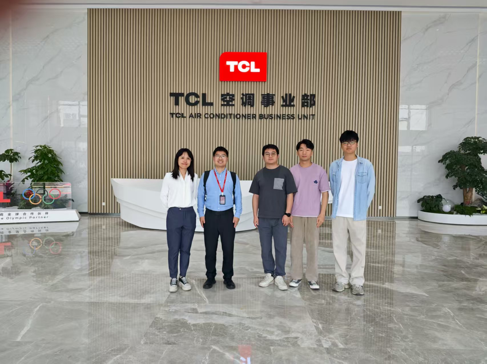
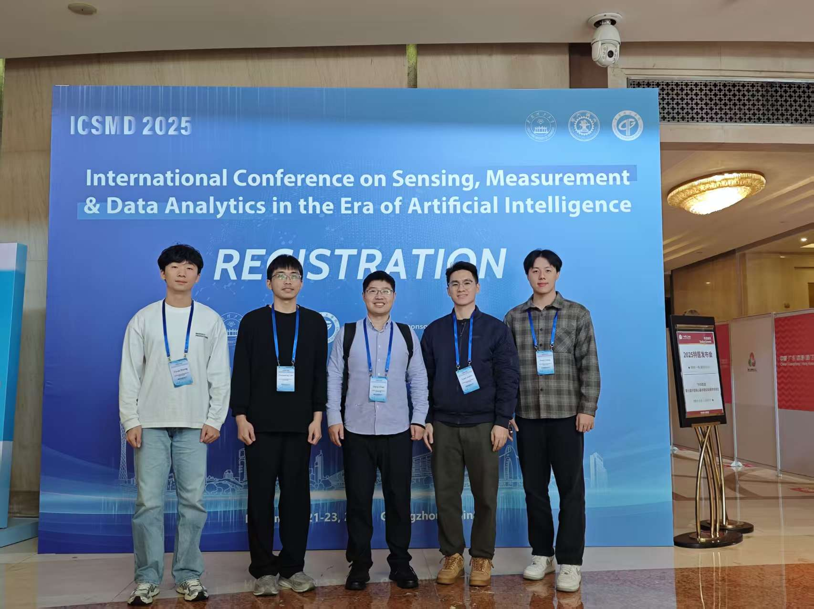
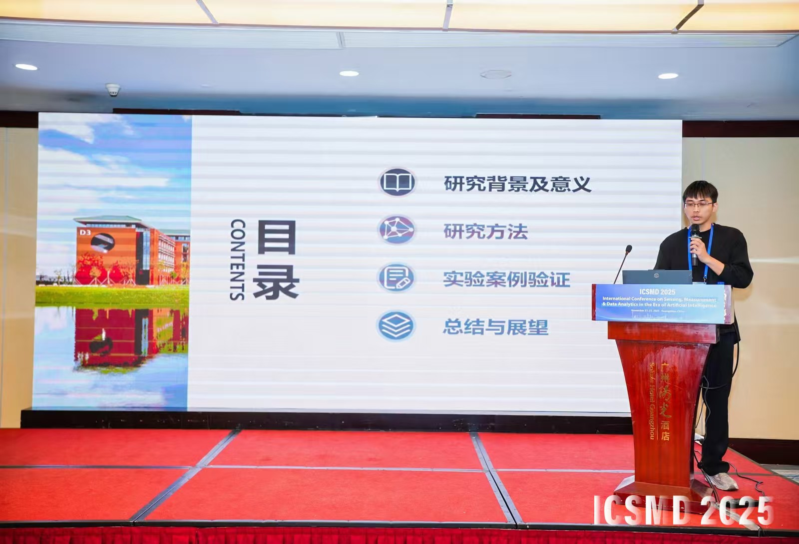
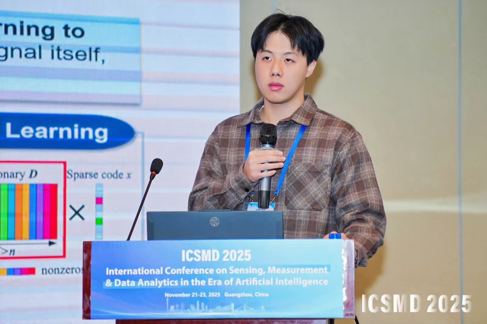
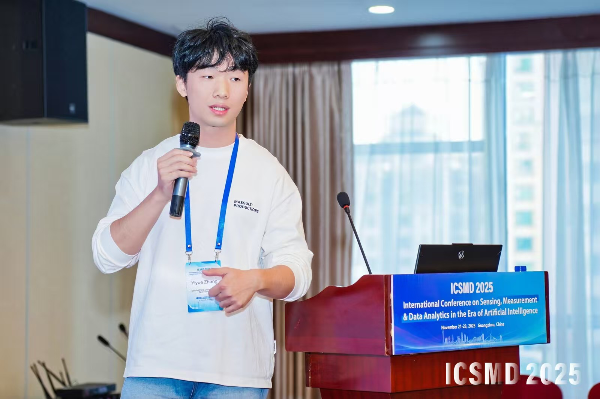
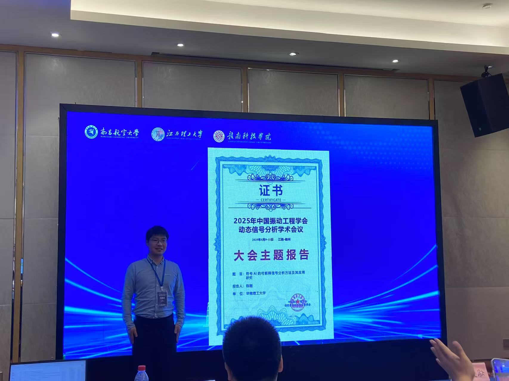
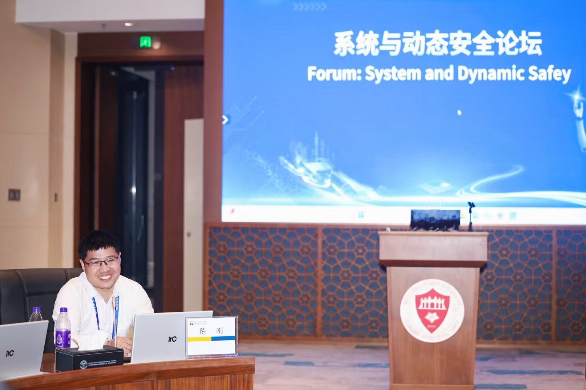
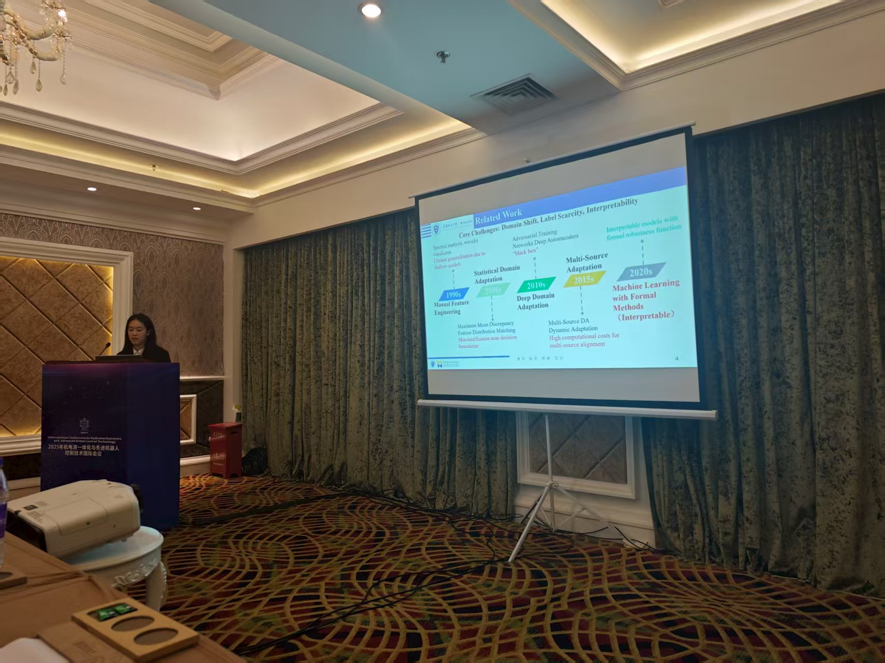
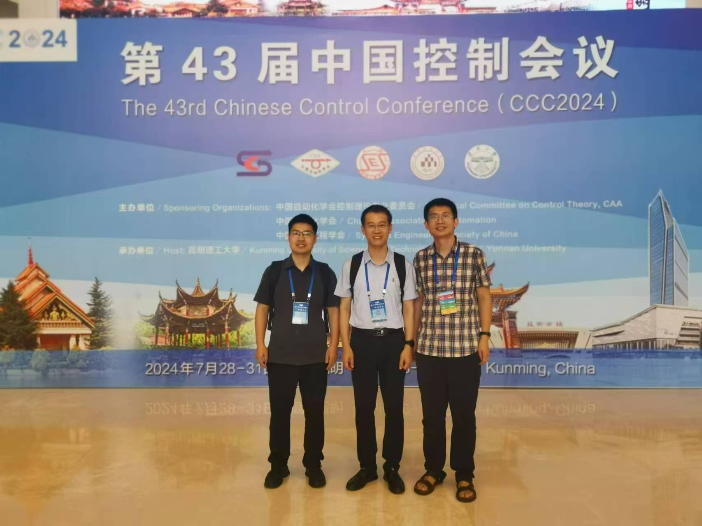

Lab culture
Memories, conferences, and collaboration

Lab Visit to TCL
赴TCL开展产学研交流访问，进行知识共享与科研讨论。

ICSMD 2025 Conference
SRIS实验室成员参加并汇报国际传感、测量与数据分析会议。

Zhenpeng Lao at ICSMD 2025
博士生劳振鹏汇报可解释故障诊断形式化方法研究。

Peixi Yang at ICSMD 2025
本科生杨沛希汇报机械设计应用研究。

Yiyue Zhang at ICSMD 2025
硕士生张艺栎汇报物理信息神经网络研究。

Dynamic Signal Analysis Workshop
陈刚老师参加中国振动工程学会动态信号分析学术会议。

System and Dynamic Safety Forum
陈刚老师在第九届非线性系统与控制会议暨第一届超级机器人国际会议组织论坛。

Hydromechatronics Conference 2025
本科生贾凯同在2025流体机电与先进机器人控制技术会议作报告。

CCC 2024 Conference
Dr. Gang Chen attended the Chinese Control Conference 2024 in Kunming, participating in special sessions and presenting research.